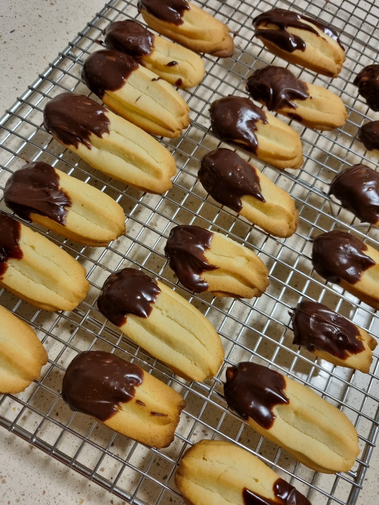

Galletas mantequilla
Las galletas danesas, conocidas también como Brysslkex, butter cookies, galletas de mantequilla o sablès,
son galletas preparadas con mantequilla, harina y azúcar. A menudo son clasificadas como "galleta crujiente"
debido a su textura, causado en parte a la cantidad de mantequilla y azúcar. ¡Compruébalo!

Pastas
Las pastas secas son una especialidad de repostería, son pequeñas galletas cocidas al horno, hecho con una
pasta a base de harina, mantequilla, huevos, y, azúcar o sal según el tipo.Además de los indicados como básicos,
las pastas secas pueden incorporar otros ingredientes que hacen que la variedad sea muy grande. ¡Compruébalo!